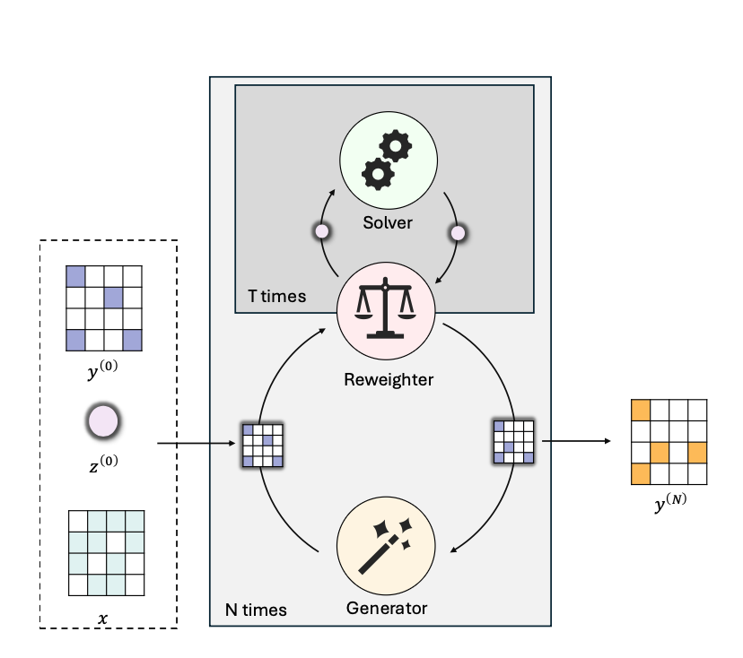
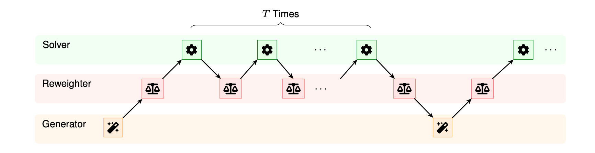
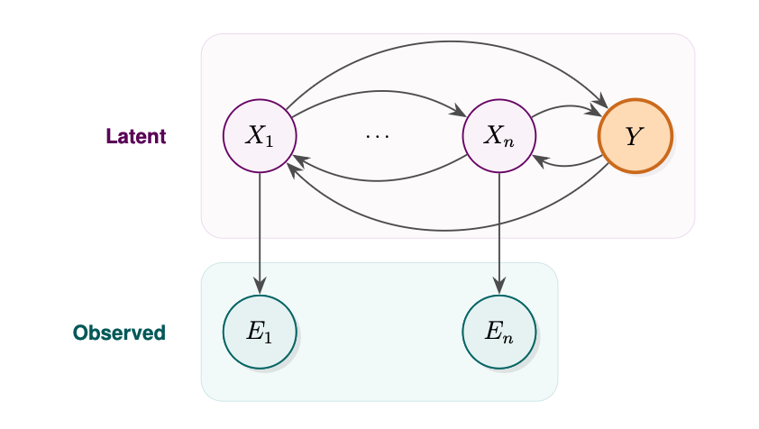

We introduce Recursive Inference Machines (RIMs), a neural reasoning framework that bridges test-time scaling and probabilistic inference. By incorporating recursive inference mechanisms inspired by classical inference engines, RIMs extend Tiny Recursive Models (TRMs) through a reweighting component, yielding better performance on challenging symbolic benchmarks including ARC-AGI-1, ARC-AGI-2, and Sudoku Extreme. Furthermore, we show that RIMs can be used to improve reasoning on other tasks, such as the classification of tabular data under observational noise, outperforming TabPFNs.



| Model | ARC-AGI-1 pass@1 | ARC-AGI-2 pass@1 | Sudoku Extreme |
|---|---|---|---|
| SimRIM (TRM) | 40.5 | 4.6 | 87.16 |
| RIMA | 42.5 | 9.9 | 89.34 |
| RIMformer | 43.25 | 5.83 | 80.21 |
| Model | Heart Disease AUC-ROC | Breast Cancer AUC-ROC |
|---|---|---|
| TabPFN | 0.85 | 0.63 |
| TabRIM | 0.87 | 0.74 |
| Name | Reweighter | Notes |
|---|---|---|
| SimRIM | Identity | Equivalent to TRM / HRM |
| RIMA | EMA | Exponential moving average |
| RIMformer | Transformer | Full history lookback |
| TabRIM | Noise prior | Gibbs sampling over TabPFN conditionals |
@article{komisarczyk2026rim,
title = {Recursive Inference Machines for Neural Reasoning},
author = {Komisarczyk, Mieszko and Mathur, Saurabh
and Kraus, Maurice and Natarajan, Sriraam
and Kersting, Kristian},
journal={arXiv preprint arXiv:2603.05234},
year = {2026}
}